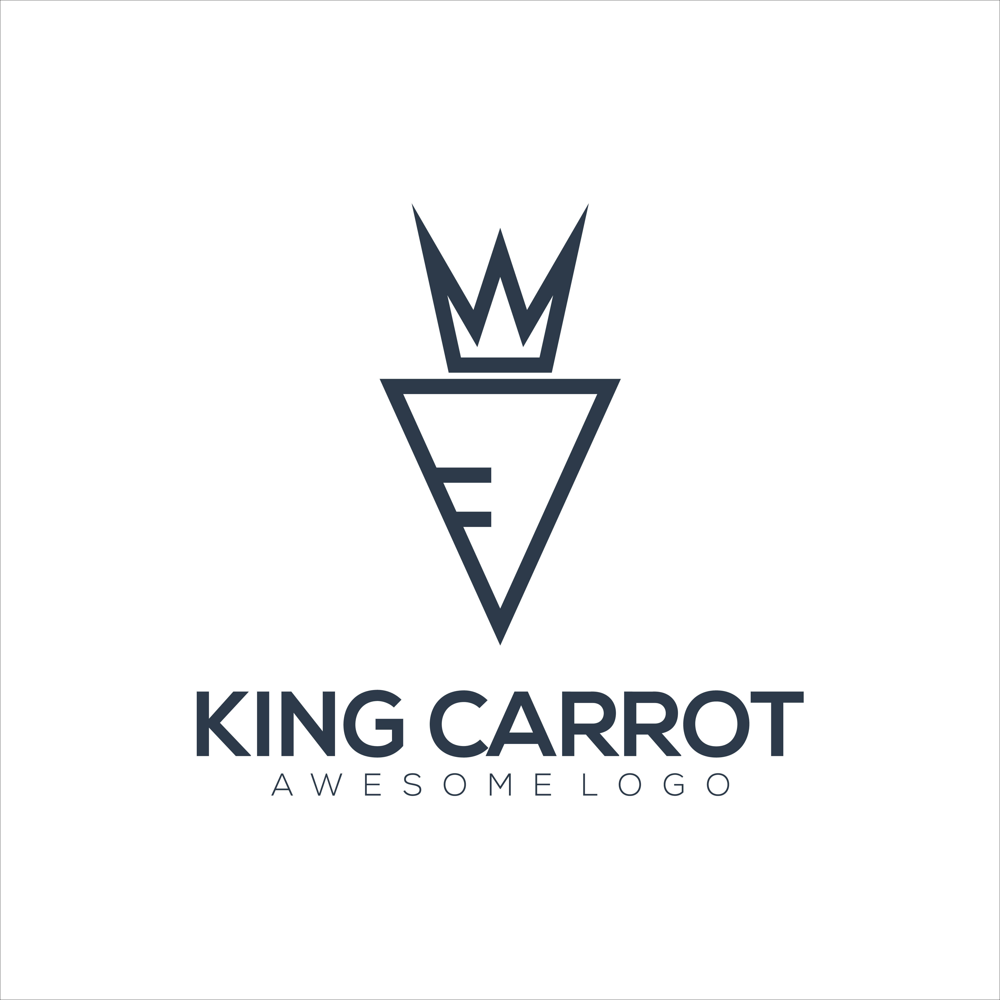
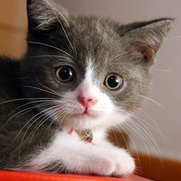

King
Carrot
Carrot real estate investor websites help you get more high quality leads. Carrot generates 40000+ leads per month with SEO optimized websites.


Carrot real estate investor websites help you get more high quality leads. Carrot generates 40000+ leads per month with SEO optimized websites.

The cat (Felis catus), also referred to as the domestic cat or house cat, is a small domesticated carnivorous mammal.
The cat (Felis catus), also referred to as the domestic cat or house cat, is a small domesticated carnivorous mammal.
The cat (Felis catus), also referred to as the domestic cat or house cat, is a small domesticated carnivorous mammal.
The cat (Felis catus), also referred to as the domestic cat or house cat, is a small domesticated carnivorous mammal.
“Stay away from those people who try to disparage your ambitions. Small minds will always do that, but great minds will give you a feeling that you can become great too.”
Call to action! It's time!
Sign up for our product by clicking that button right over there!